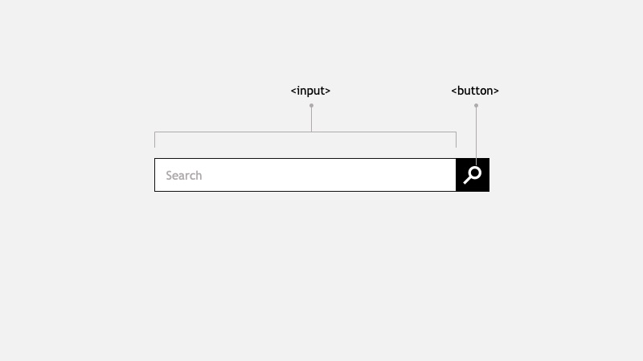
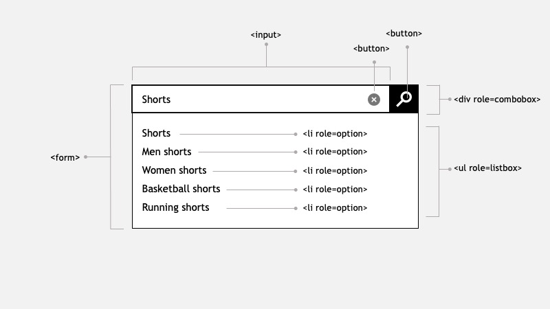
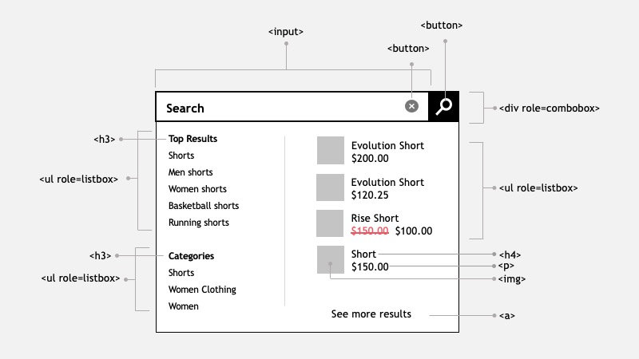

What we design

Typically we design the seach bar inside the Header as two elements: an input box and a button with a magnifier icon
At this point a decision has to be made regarding the field label and the button hidden text.
Field label: which string do we want to use? "Search", "Search for products", "Search for Product & SKU Numbers". Providing a proper label will give users a better idea of the information that can be found using the textbox.
placehoder label are commonly used to label this field, however there's a visual and auditory impact. Read the placeholder attribute to learn more.
Button label: this button has no visible label, aria-label is recommended to be used to give some indication to screen readers about the buton intent.
What we might need
When this search box is developed, a robust component must created. Most likely we'll integrate with a Search API service to display a list of suggestions. This is considered a Combobox.
A combobox is a widget made up of the combination of two distinct elements: 1) a single-line textbox, and 2) an associated pop-up element for helping users set the value of the textbox.
The popup is hidden by default, and in Ecommerce typically is displayed when the textbox is focused or when a certain (configurable) number of characters are type.
Keyboard navigation must be designed and considered during development. For instance using TAB or DOWN ARROW should focus on the popup (if it's open).
- The entire element should be wrapped in a
<form>. - The input element should have a clear button when user starts typing.
- The component should show a list of suggestions when user starts typing.
- Aria roles should be used:
<combobox>,<listbox>and<option>.

Useful links
What we didn't know we need

Some websites, most commonly appareal use an enhance component that shows more information in the pop-up element. For example:
- Top Results: a list of links that relates to the search term
- Categories: a list of recommended categories based on the search term
- Detail list of products: containing images, title, price
- See more results button: will drive the user to the Search result page
In some cases when the categories are hovered, the list of products changes. Consider how a user with keyboard will navigate this pop-up. Think how a screen reader will navigate this.
While discussing this component with some of my colleages, here are their comments
“I can't imagine the data structure, the code, how to communicate this to a screen reader, or how to navigate it with keyboard”
“This went from 3 points story to a 21 points epic”
The impact of implementing a solution like this, is that it might require an entire team to build and maintain this component.